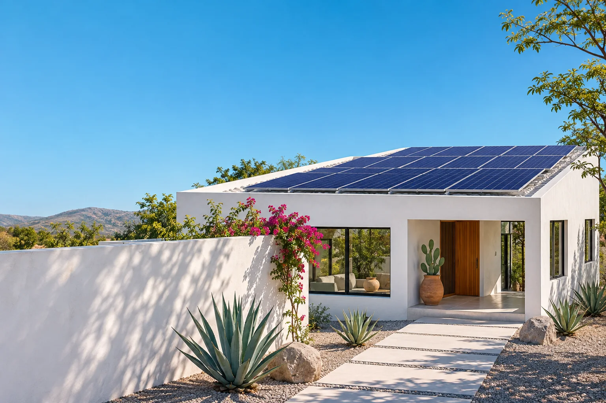

Energía solar residencial
Del sol a
tu techo.
Prueba cómo cambian los paneles que caben y la energía estimada al ajustar un techo de ejemplo.
Probar el simulador
Diseña una instalación
Ajusta el consumo y el techo. Luego marca los espacios que quedarían en sombra.
Plano del techo
Selecciona una casilla para agregar o quitar sombra.
Resultado de muestra
—Paneles
—kWh al mes
—Del consumo
Compara escenarios
Guarda hasta dos para ver qué cambia al mover el techo, cambiar de panel o ajustar tu meta.
Cómo funciona esta muestra
El simulador usa una distribución simplificada y una producción hipotética por panel. Las sombras descartan casillas completas. La estimación sirve para probar la interfaz, con datos de ejemplo.